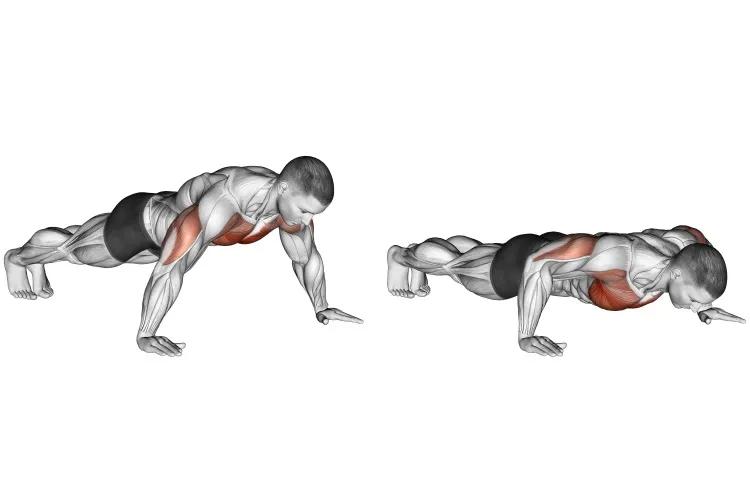

1°
Flexão de braços
A flexão de braço, ou flexão tradicional, é a variação mais conhecida de flexão que é indicada para fortalecer principalmente músculos do peito, ombro e braços, como os peitorais, deltoides e tríceps, e também melhorar o equilíbrio e postura do corpo.
2°
Barra fixa

A barra fixa é um exercício em que a pessoa ergue o peso do próprio corpo em uma barra horizontal suspensa usando principalmente os músculos das costas, dos ombros e dos braços. Embora pareça uma simples flexão dos cotovelos, a barra fixa envolve o trabalho de vários grupos musculares de forma integrada, proporcionando benefícios de força e hipertrofia muscular.
3°
Abdome infra

O abdominal infra serve para fortalecer a região inferior do abdômen, melhorar a postura e aumentar a resistência muscular. É um exercício que também ajuda a fortalecer o core, que é responsável por quase todos os movimentos do corpo.
4°
Agachamento

O agachamento livre é um exercício que serve para fortalecer e tonificar os músculos das pernas, glúteos e região lombar. Ele também melhora a postura, o equilíbrio e a mobilidade.
5°
Salto explosivo

O agachamento com salto ou jump squat é um exercício que combina a técnica do agachamento com um salto vertical, gerando força rapidamente e melhorando a capacidade muscular das pernas, glúteo e quadril.